Patient photos, appointments with online booking, WhatsApp reminders, patient portal, ICD-10 diagnoses and accounting — on your phone, tablet and in the browser. Built by a clinician, for clinicians.
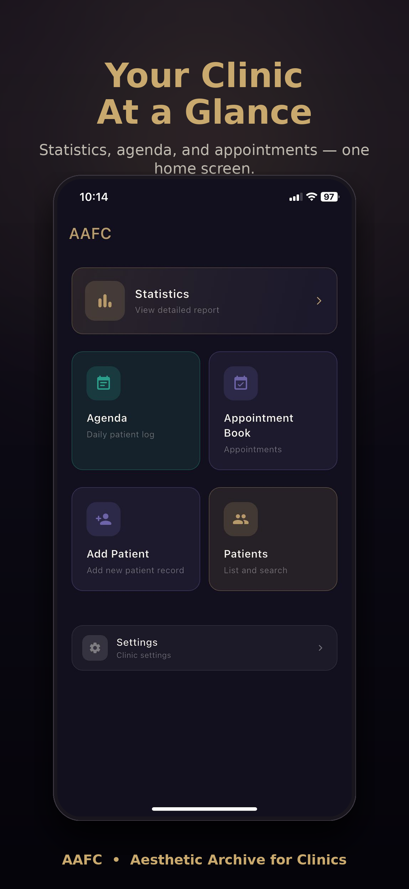
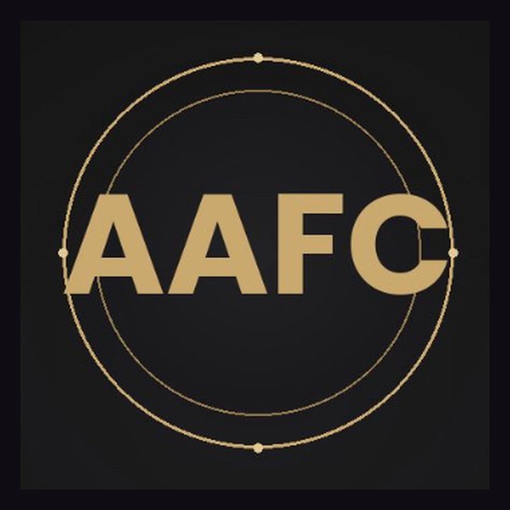
No sales demo, no lock-in. Capture on your phone, manage from any browser, and export your entire archive whenever you want.
Shoot in the field on your phone, review and manage everything from the web panel — fully synced.
Download your full archive — patients, visits, and photos — as ZIP, HTML, JSON, or CSV. It is yours to keep.
Download, sign in, add your first patient. No demo call, no onboarding fee, no waiting on a sales team.
AAFC grew from a photo archive into a complete clinic system. Everything below works in the mobile app and in the web panel.
Your own booking page for Instagram, Google and your website. Patients pick a service, doctor and free time; the slot appears in your appointment book instantly.
Each doctor with their own hours and colour. The same doctor, room or laser can never be double-booked — in the app or online.
Reminders carry a one-tap confirm / cancel link. Cancellations reach you at once; no-show history appears on every appointment.
Patients fill in allergies, medication, pregnancy and past procedures on their phone before the visit. Risks are flagged on the visit screen.
One private link per patient: upcoming appointments, packages, signed consents and the photos you choose to share. Protected with a PIN.
Search 15,000+ codes by code or name. Includes the official Turkish Ministry of Health list and aesthetic diagnoses in 10 languages.
Sell session packages, track instalments and receivables, record income and expenses, and close the cash register at the end of the day.
Send selected before/after photos to a patient as a private, expiring link — no screenshots in WhatsApp threads.
Print-ready QR codes for your booking page, Instagram, TikTok, website, WhatsApp and Google reviews — for the front desk and business cards.
Branded collages with logo and dates. 1:1, 4:5, 9:16, 3:4 — every aspect ratio your feed needs.
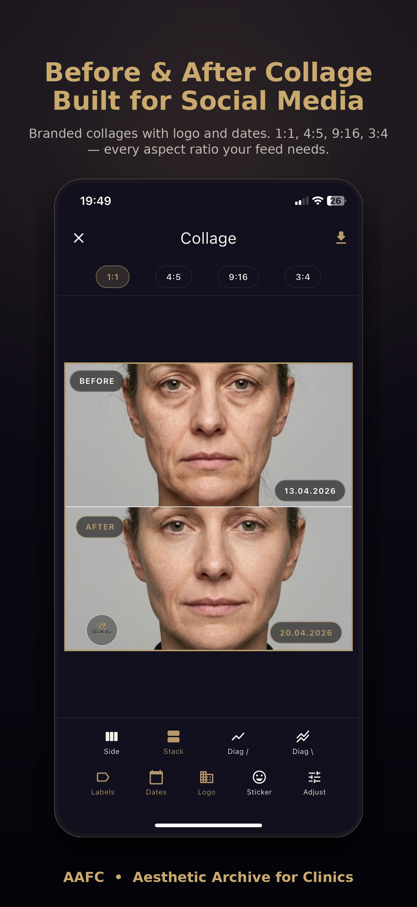
Built for
The killer feature for clinical consultations. Slide between two visits to reveal progress in real time — perfect for showing results to patients during follow-ups.
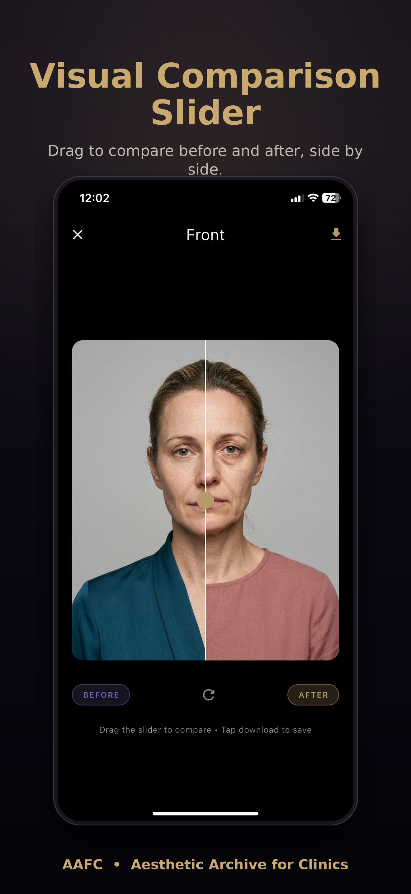
Front, left 45°, right 45°, left profile, right profile — the clinical five-angle protocol used by aesthetic professionals worldwide. Compare any two visits in a single glance.
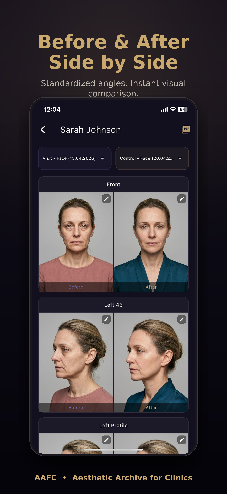
Every export carries your clinic logo, address, doctor name, and contact details. Auto-formatted multi-page reports ready for print, WhatsApp, or email.
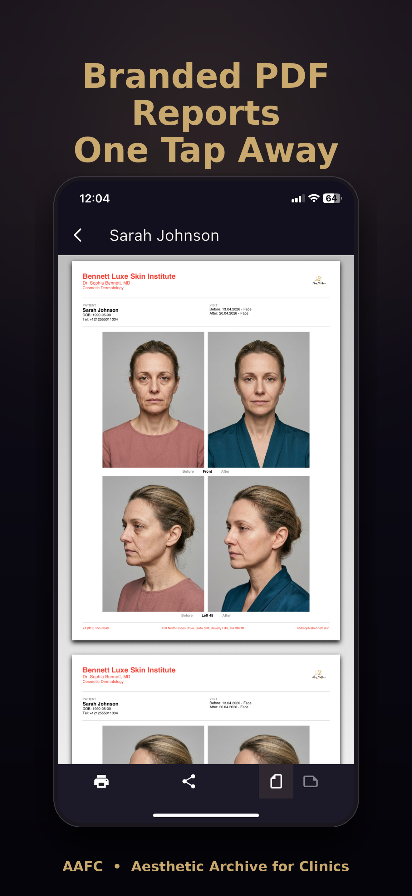
Every procedure, every patient, every day — automatically logged. Navigate the calendar to see exactly who was treated and what was performed on any given day.
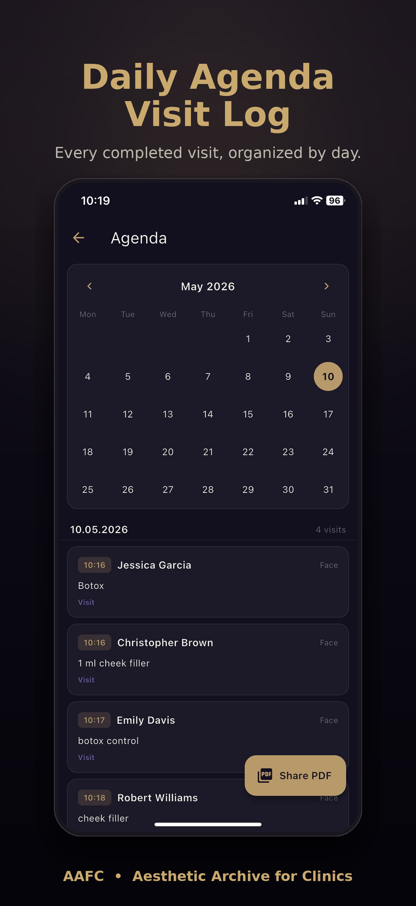
Schedule appointments on a calendar and send patients reminders via WhatsApp or SMS — in one tap. Customize your reminder message per clinic for a consistent brand voice.
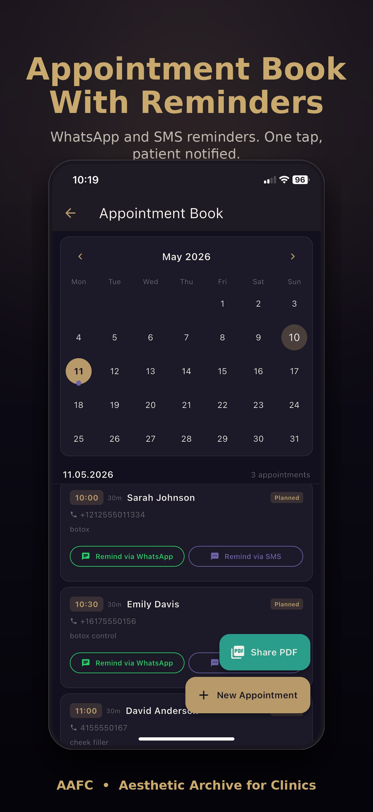
Stop searching your camera roll. Every patient, every visit, organized in a single clean list with instant search.
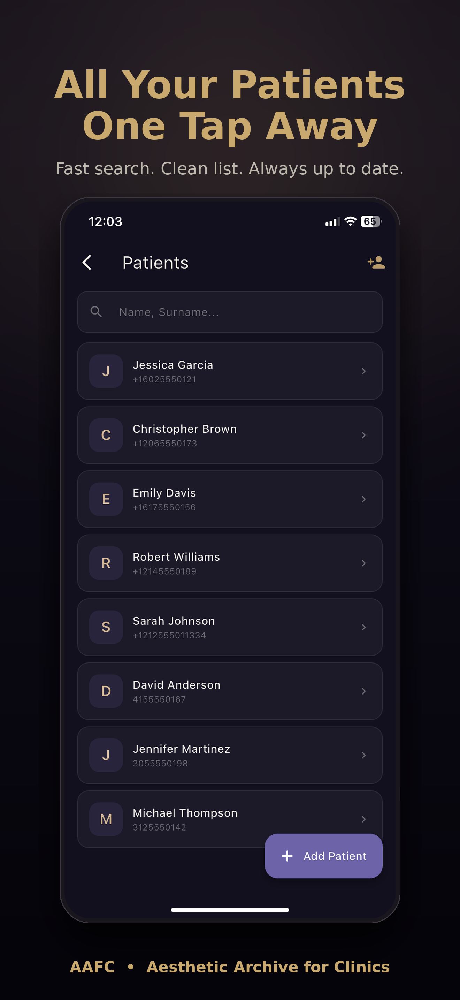
Patient count, recent visits, today's agenda, upcoming appointments — your entire clinic activity on one home screen. Configure storage, users, language, and branding from one panel.
Need to download a year of records? Open your data on any computer browser. Add patients, run backups, and export everything in multiple formats — without touching your phone.
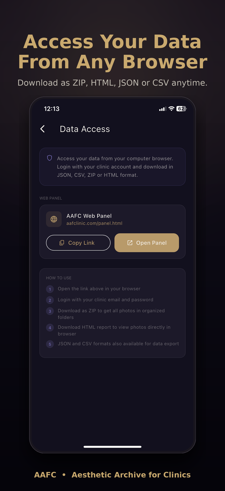
Your clinic identity flows automatically into every PDF and shared photo: clinic name, doctor profile, specialty, contact, and social channels. Cloud storage with automatic backup, nightly to Cloudflare R2.
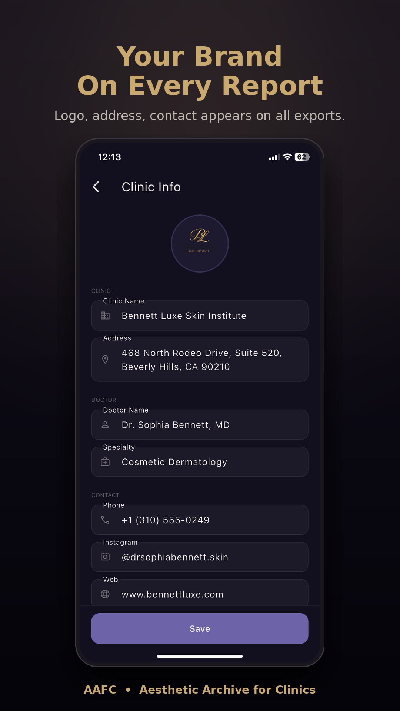
One subscription. All features unlocked. Cancel anytime.
Your complete aesthetic clinic archive.
Try free for 14 days. Cancel anytime in your account settings.
Everything you need to know about AAFC.
Yes. All photos and patient records are encrypted in transit and at rest. AAFC stores data on Supabase secure infrastructure with row-level security, and runs automatic nightly backups to Cloudflare R2. We never share data with third parties or advertisers. You can export your full data anytime, and request account deletion via our deletion page.
Patient list, visit history and photos can be moved from any program. On a computer, aafclinic.com/panel > IMPORT, in 3 steps: 1) Patients: export the list to Excel/CSV and upload it; match name, phone, ID and old patient no columns. 2) Visit history: upload the treatment/session list as Excel/CSV; each row is added to its patient with date, procedure and notes. 3) Photos: choose the photo folder (or ZIP) of the old program; patient folders are matched by name or patient no, the date comes from the folder/file name or the photo, and photos of the same day form one visit. Duplicates are skipped and every import can be undone. If you can't export, write to support@aafclinic.com and we'll move it together.
AAFC is built for licensed medical professionals: plastic surgeons, dermatologists, ENT specialists, aesthetic doctors, and clinic teams. It is a documentation and archive tool; it does not provide diagnosis or treatment guidance.
Tap a patient's appointment, then tap the WhatsApp button — your customizable reminder message opens directly in WhatsApp with the patient's number pre-filled. Send in one tap. This uses WhatsApp's click-to-chat, so there is zero per-message cost. You can also send via SMS using your phone's native messaging.
Yes. Turn on online booking, choose your services, durations and working hours, and share your link or QR code on Instagram, Google and your website. Booked times are blocked automatically, and patients can join a waiting list when a day is full.
Yes. Add each doctor with their own working hours. Appointments are assigned to a doctor, the same doctor cannot be double-booked, and patients can choose a doctor — or "any doctor" — when booking online.
Yes. Add one or more diagnoses to any visit by searching code or name. AAFC includes the full ICD-10 list, the official Turkish Ministry of Health list, and common aesthetic diagnoses in 10 languages.
The trial converts to a paid 49.99 USD per month subscription unless you cancel before the trial ends. You can cancel anytime through your App Store or Google Play account settings.
Yes. The Multi-User Clinic Access feature lets you invite up to 5 team members under your clinic account, each with role-based permissions.
AAFC runs on iPhone (iOS 15+), iPad, Android phones and tablets (Android 7+), and Apple Silicon Macs. The web panel works in any browser for patients, appointments, accounting, online booking settings, backups and exports.
AAFC is fully localized in 10 languages: Turkish, English, German, French, Spanish, Italian, Portuguese, Russian, Korean, and Chinese — including reminder message templates per clinic.
You decide. AAFC is an archive tool you control. We recommend obtaining patient consent before storing identifiable medical photos, and following your local medical data regulations (KVKK, GDPR, HIPAA, etc.).
Join clinics that document with confidence. 14 days free, no card needed to start.